Scientific Classification
| Kingdom | Animalia | Animalia | Animalia |
|---|---|---|---|
| Phylum | Chordata | Animalia | Animalia |
| Class | Reptilia | Animalia | Animalia |
| Clade | Archosauria | Animalia | Animalia |
| Clade | Pseudosuchia | Animalia | Animalia |
Taxonomic note: The classification of Kaimeran crocodilians remains a subject of considerable disagreement among the naturalists of the Assembly. This is partly a consequence of the exceptional diversity of the group, but it also reflects the difficulty of assigning consistent taxonomic ranks to organisms that have undergone repeated introductions, hybridization, convergent evolution, and extinction. The Assembly generally distinguishes species according to their morphological differences and evidence of reproductive compatibility, while subspecies are commonly used for geographically or ecologically differentiated populations that remain connected by reproduction.
01 · INTRODUCTION
Overview
Pseudosuchians are a diverse group of archosaurs that includes the living crocodilians and their extinct relatives. Pseudosuchians are also informally known as "crocodilian-line archosaurs", in contrast to the "bird-line archosaurs" or Avemetatarsalia. Despite Pseudosuchia meaning "false crocodiles", the name is a misnomer as true crocodilians are now defined as a subset of the group. Contrary to popular belief, crocodilians differ significantly from their ancestors and distant relatives, as Pseudosuchia contains a staggering diversity of reptiles with many different lifestyles.
Crocodilians and their relatives constitute one of the most successful and ecologically diverse groups of archosaurs in Kaimere. Although the living crocodilians of Earth are commonly associated with semiaquatic predation, their Kaimeran relatives occupy a far wider range of ecological roles. They include enormous aquatic predators, specialized fish-eaters, terrestrial hunters, burrowing herbivores, armored browsers, and massive bipedal megaherbivores. The Known World alone supports a particularly diverse assemblage, ranging from the aggressive saltwater crocodiles of its coasts to the giant gharials of its inland wetlands and the herbivorous turtle-crocs of its forests.
This diversity reflects the evolutionary history of the pseudosuchians. On Earth, pseudosuchians once encompassed an extraordinary range of terrestrial and aquatic forms, including herbivorous aetosaurs, bipedal poposauroids, and large predatory rauisuchians. However, Kaimere's history of biological introductions, known as Harvests, has profoundly shaped which lineages became established. Because the Portal introduced organisms from Earth at particular intervals, the planet's evolutionary history does not correspond directly to Earth's geological succession. Some important archosaur radiations were never introduced, while other lineages arrived long after their relatives had disappeared from Earth.
The result is a fauna in which familiar crocodilian body plans coexist with forms that would be exceptional or entirely unfamiliar in Earth's ecosystems. Their history is not simply one of survival: it is a record of repeated ecological expansion, displacement, extinction, and renewed diversification.
02 · DEEP TIME
Evolutionary History
Evolutionary Origins and the First Jurassic Dynasty
The two principal surviving lineages of archosaurs are Pseudosuchia and Avemetatarsalia, the latter including dinosaurs and birds. Although stem archosaurs may have existed in some capacity during Kaimere's Permian Dynasty, the origins and early diversification of the major archosaur lineages remain poorly represented in the planet's known fossil record.
Kaimere was still experiencing the Permian Dynasty during much of the period when the earliest archosaurs diversified on Earth. Consequently, many of the terrestrial pseudosuchian groups that characterized Earth's Triassic were never established in Kaimere through a substantial Harvest. The earliest well-established introductions of crocodile-line archosaurs appear to have occurred around the beginning of the Jurassic, approximately 200 million years ago.
These introductions included crocodylomorphs, the lineage from which modern crocodilians descend. They arrived during a period of ecological recovery following a mass extinction, when numerous terrestrial and aquatic niches were available for colonization. Many introduced archosaurs were already relatively large and anatomically specialized, allowing them to expand rapidly into the available habitats. The precise dates of these events remain uncertain. The Assembly has difficulty establishing the chronology of Harvests beyond a few million years, and the boundaries between successive dynasties are not always represented by easily distinguishable fossil deposits. Nevertheless, some Ni'Khari formations show a striking transition between faunas dominated by therapsid lineages and those containing abundant archosaurs. Fossils resembling the early crocodylomorph Protosuchus are particularly common in some of these deposits and provide evidence for the establishment of crocodile-line archosaurs during this transition.During the First Jurassic Dynasty, pseudosuchians diversified alongside the first major theropod dinosaurs. While theropods expanded into increasingly large predatory roles, several basal crocodylomorph lineages independently evolved large body sizes and occupied comparable positions in the food web. In tropical forests, some of these crocodile-line predators became formidable competitors for the earliest large dinosaurs.
Protosuchian Radiation
Protosuchia was the first major successful radiation of crocodile-line archosaurs in Kaimere. Descended from animals resembling Protosuchus, these early crocodylomorphs expanded into a broad assortment of ecological roles. Although the earliest members were predominantly predatory, their descendants diversified into large terrestrial hunters, smaller pursuit-oriented predators, armored herbivores, and several lineages of specialized plant-eaters. The success of these animals was especially pronounced in the warm, humid environments of the First Jurassic Dynasty. Dense forests, extensive wetlands, and productive floodplains supported abundant prey and vegetation, while the extinction of earlier faunas had left many ecological opportunities available. Pseudosuchians did not simply fill vacant niches; they competed among themselves for the same resources, producing a complex assemblage of predators and herbivores.
Among the most formidable early pseudosuchians were the tyrannosuchians, a group of large predatory protosuchians that occupied apex-predator roles in many closed-forest environments. Their overall appearance and presumed ecology recall the large terrestrial pseudosuchians of Earth's Triassic, particularly the rauisuchian-grade predators, although a direct relationship to those groups has not been established. The largest tyrannosuchians appear to have reached approximately two tons in some lineages, and their success in forest habitats may have allowed them to dominate even where early theropods were present. Their bodies and feeding adaptations suited them to ambush predation, in which a short, decisive attack could overcome prey too large to pursue over long distances. The most spectacular representative was Tyrannosuchus, particularly the enormous Tyrannosuchus nakarensis. Its skull approached the dimensions of that of Tyrannosaurus, and its bite was correspondingly formidable. Fossils attributed to large prosauropods and other archosaurs show extensive damage to long bones. At least one sauropod specimen displays healing around a severe injury, indicating that the animal survived an encounter with a predator capable of inflicting catastrophic damage. The tyrannosuchians' dominance was not permanent. As the climate became cooler and more arid and extensive jungles gave way to open forests and floodplains, their populations declined. By the beginning of the Second Jurassic Dynasty, the last of the major tyrannosuchians had disappeared. Their extinction coincided with the expansion of dinosaurs and the arrival of additional harvested lineages, which increasingly occupied the terrestrial habitats in which the giant pseudosuchians had once flourished.
A different predatory radiation was represented by the allochevrons. These relatively small to medium-sized pseudosuchians included numerous species that superficially resembled contemporary theropod dinosaurs. Their skeletons could be difficult to distinguish from those of dinosaurs, particularly because allochevrons independently evolved hollow bones and an extensive respiratory air-sac system. One useful diagnostic feature is the structure of their caudal chevrons, the bones beneath the tail vertebrae. In allochevrons, these bones possess a deep central groove and a broad point of contact, providing a comparatively reliable means of distinguishing their remains from those of similarly proportioned theropods. Their success has been attributed in part to their physiology. In Kaimere's hot, humid climate, maintaining a high metabolic rate for warmth would have offered less benefit than it did in colder environments. Allochevrons are thought to have required substantially less food than similarly sized theropods, while features of their skeleton and respiratory system may have helped them remain active without excessive heat accumulation. If these interpretations are correct, allochevrons could sustain larger populations on the same food resources and remain viable during periods of scarcity. They occupied numerous roles within the First Jurassic Dynasty's food webs. Although tyrannosuchians dominated the largest predatory niches in some forest habitats, allochevrons were widespread among the smaller and medium-sized predators. Certain species also reached impressive dimensions. Apatosuchus, for example, attained approximately eight metres in length and two tons in mass, making it one of the most abundant large predators in the tropical forests. Despite this early success, the allochevrons eventually declined under competition from theropods. Their extinction illustrates that an energetically economical lifestyle could confer a substantial advantage without guaranteeing long-term dominance when environmental conditions and the composition of competing faunas changed.
Predatory forms were only one component of the early protosuchian radiation. Several lineages became herbivores, and these proved to be among the most enduring members of the group. Their success arose from the ability to exploit vegetation that was abundant in Kaimere's warm, productive environments but less accessible to many competing animals.
Paleosuchia encompasses several herbivorous protosuchian lineages, including the ancestors of the modern turtle-crocs and sloth-crocs. These animals developed specialized feeding structures that enabled them to process a wide variety of plant matter. Some retained relatively generalized dentition, while later lineages increasingly modified or lost their teeth and relied on beaks to cut vegetation. Early paleosuchians were particularly successful in dense forests, where ferns, horsetails, soft foliage, and other low-growing plants provided abundant food. In some fossil formations, relatively basal herbivorous forms constitute a substantial proportion of the megafauna. Their abundance indicates that the first Jurassic ecosystems were not dominated exclusively by large predatory archosaurs and dinosaurs, but also supported extensive communities of crocodile-line herbivores. Over time, these herbivorous lineages became more specialized. Some adopted bipedal postures, while others developed extensive armor or became adapted to semiaquatic habitats. Two of their most distinctive surviving descendants are the champsocnids, or sloth-crocs, and the chelysuchians, known as turtle-crocs.
Among the unusual herbivores of the First Jurassic Dynasty were the armored archaeosaurs. These animals were especially characteristic of Ni'Khar and Kairul, although they were less abundant than several other herbivorous clades. Their largest known representative was Archaeosaurus, which appeared toward the end of the Age of Crocodiles. It possessed a large body held relatively close to the ground, a heavy tail, extensive armor, and a long, sharply pointed beak. These features suited an animal that fed close to the ground, cropping the horsetails, ferns, and other tough vegetation that grew in the open areas between forests and swamps. The beak was likely capable of cutting through substantial plant material, including young woody growth. This gave Archaeosaurus access to food unavailable to less specialized browsers. Its armor made it difficult for most predators to attack safely, while its beak could inflict serious injuries on an approaching attacker. The largest tyrannosuchians were among the few predators likely to pose a substantial threat to a mature individual. The tail club is an especially conspicuous feature of these animals, but its defensive role may have been more limited than its appearance suggests. It was likely useful in combat between members of the same species and in defending the flanks against attacks. Against a large predator, the beak and protective armor may have been more important than the tail itself. Despite their success during the early dynasties, the large armored archaeosaurs did not survive into the modern fauna. Their legacy is instead represented by smaller, more generalized herbivorous protosuchians that survived the successive ecological turnovers of Kaimere.
Champsocnids represent another major herbivorous radiation. Their ancestors were comparatively generalized animals, but one lineage evolved a bipedal posture and developed into a successful group of terrestrial browsers. For a time, these animals competed effectively with herbivorous dinosaurs, demonstrating that crocodile-line archosaurs could occupy ecological roles commonly associated with other reptilian lineages. Smaller champsocnids persist in Kairul, while their most remarkable descendants evolved in the Permian Islands. There, some lineages became enormous herbivores adapted to the dense tropical forests of the islands. Their body size, upright stance, large forelimbs, and powerful claws allowed them to reach and manipulate vegetation that would be inaccessible to smaller browsers.
Chelysuchians are among the most conservative and enduring herbivorous pseudosuchians in Kaimere. They evolved recognizable forms during the Jurassic and retained a successful general body plan through subsequent environmental changes. Unlike the giant champsocnids, modern chelysuchians tend to be relatively small and occupy low-browsing or semiaquatic niches. Two principal clades survive today: the terrestrial Testudochampsidae and the semiaquatic Chelysuchidae.
Second Jurassic Dynasty
The First Jurassic Dynasty was a period of exceptional ecological opportunity. The disappearance of older faunas created extensive opportunities for newly introduced archosaurs, and warm, productive conditions supported a broad range of predators and herbivores. Pseudosuchians became especially successful in tropical forests, where they occupied roles ranging from small predators to massive herbivores. This dominance began to erode during the Second Jurassic Dynasty.
Kaimere became cooler and more arid, and dense jungles contracted as open forests and floodplains expanded. At the same time, new dinosaur lineages arrived through additional Harvests, including taxa associated with later Jurassic faunas. Large terrestrial predators were particularly vulnerable to these changes. The tyrannosuchians disappeared, and the allochevrons lost ground to theropods. Large herbivorous protosuchians also declined as sauropods expanded across the open forests and floodplains. Sauropods became enduring dominants in many of these environments, while surviving protosuchians retreated into habitats where their feeding adaptations and life histories continued to offer advantages.
The consequences were uneven. Some lineages vanished entirely, while others survived in restricted environments or diversified into new ecological roles. The terrestrial decline of the large protosuchians did not mark the end of pseudosuchian success in Kaimere. Instead, it was followed by a series of radiations in marine environments and, later, among the modern crocodilian groups.
Marine Pseudosuchians and the Mesozoic Dynasties
Although terrestrial pseudosuchians never regained the dominance they had enjoyed during the First Jurassic Dynasty, the Mesozoic remained an important period in their history. Several lineages expanded into marine environments, while others diversified on land following subsequent Harvests.
Thalattosuchians were among the most specialized marine crocodile-line archosaurs. Their most derived members, the metriorhynchids, evolved fully aquatic bodies, including streamlined forms and tail flukes. They also developed live birth, an unusual reproductive adaptation among archosaurs that eliminated the need for females to return to land to lay eggs.
Metriorhynchids were introduced to Kaimere during the early Second Jurassic Dynasty, when marine ecosystems were recovering from the ecological disruption of the preceding period. Their arrival coincided with an opportunity for diversification. Although plesiosaurs, ichthyosaurs, aquatic therapsids, and pliosaurs occupied numerous marine niches, metriorhynchids evolved a wider range of body sizes and feeding specializations in Kaimere than they had achieved on Earth. Some developed broad crushing teeth suited to feeding on trilobites and other crustaceans. Others possessed highly vaulted palates, interpreted as adaptations for suction feeding on cephalopods such as ammonites. At the upper end of the size range, a metriorhynchid from the later Second Jurassic Dynasty reached approximately thirteen metres in length.
Their subsequent history was less favorable. During the Second Cretaceous Dynasty, marine productivity declined, and metriorhynchids lost much of their diversity. The arrival of giant mosasaurs toward the end of the period appears to have contributed to their decline. Nevertheless, populations in relatively isolated seas within Kairul survived and eventually recovered. These modern survivors occupy only a fraction of the ecological range their ancestors once possessed, but they demonstrate that the lineage never disappeared completely from Kaimere.
Eusuchia and the Origin of Modern Crocodilians
The crocodilians most familiar to modern observers belong to Eusuchia, a clade distinguished by a suite of cranial and anatomical features. Among the most important is a well-developed secondary palate, which separates the nasal passages from the main oral cavity. This arrangement allows an animal to breathe through its nostrils while its mouth is occupied or submerged, an important advantage for an air-breathing predator that often feeds in water.
Modern eusuchians include crocodiles, alligators, caimans, and gharials, along with their extinct relatives. However, the familiar crocodilian body plan is not the only form represented in the group's evolutionary history. Several extinct crocodile-line groups evolved terrestrial, arboreal, or otherwise specialized lifestyles. The mekosuchians of Earth, for example, included forms adapted to terrestrial environments, while the dyrosaurids and elosuchids resembled modern crocodilians in overall appearance despite not belonging to the same immediate lineages.
In Kaimere, the history of Eusuchia has been shaped by several separate introductions, followed by local diversification. Fossils of early alligator-line eusuchians date to approximately 80 million years ago, indicating that the ancestry of modern alligators and crocodiles was already well established by the Late Cretaceous. The common ancestor of crocodiles and alligators must therefore have lived at least this far back, and potentially earlier.
During the Second Cretaceous Dynasty, the ancestors of crocodiles and gharials may also have been introduced. The surviving fossil record is sparse, making it difficult to determine whether these animals belonged to the crocodile, gharial, or more basal eusuchian lineages. Nevertheless, their later distribution and the presence of numerous lineages in Kairul indicate that these groups became established. Modern crocodilians in Kaimere are therefore not the descendants of a single introduction. They represent multiple historical arrivals, followed by local evolution, competition, hybridization, and occasional extinction.
The Tyrant Dynasty Alligatoroids
Alligatoroids became particularly successful during the transition between the Second Cretaceous Dynasty and the Tyrant Dynasty. This period was marked by intense aridity and severe competition for wetlands. Many existing aquatic and semiaquatic predators declined as suitable habitats contracted. The newly introduced alligatoroids were comparatively tolerant of cooler conditions, an advantage in the context of Kaimere's changing climate. Two major alligatoroid groups became prominent during the Tyrant Dynasty: the Sobekneterids and the Eborsuchians.
Sobekneterids were large, generalist alligatoroids that occupied major aquatic-predator niches. Their most spectacular representative was Sobek, a giant crocodilian that may have reached approximately seventeen metres in length in the largest males. As in several other enormous aquatic predators of Kaimere, the sexes differed greatly in size. Females apparently remained below approximately ten tons, allowing them to move onto land to nest. Males could grow much larger, eventually becoming so cumbersome that they were effectively restricted to aquatic habitats. The largest Sobek males may have shaped their wetlands through their movements. Like the giant kurajaku, they likely excavated and maintained channels as they travelled, redistributed nutrients, and altered the pathways used by fish and other aquatic animals. Their large size also meant that adult males could range widely rather than remain resident in one small area. This may explain why a single species could occupy an enormous area across Ni'Khar and Kairul. Their reign ended with the Dynastic Extinction. The ecological devastation that followed removed the extensive food resources needed to sustain such enormous animals. Although their broader lineage persisted, no later alligatoroid in Kaimere is known to have regained the extraordinary dimensions of Sobek.
Eborsuchians were another distinctive alligatoroid radiation, recognized by ten unusually enlarged teeth that extend well beyond the dimensions of comparable teeth in most crocodilians. These tusks, combined with powerful jaws, were adapted to seizing and holding large prey. Despite their formidable appearance, tusked crocodiles are specialized semiaquatic predators. Their prey includes large fish, other crocodilians, and heavily armored animals. In Kairul, semiaquatic rhinos appear to make up a substantial portion of their diet. Their heavy bodies and powerful jaws allow them to subdue prey that would be difficult for many other crocodilians to handle. The genus Eborsuchus includes some of the largest living representatives, with the biggest males reaching approximately twelve metres. Their distribution is more restricted than that of many generalized crocodilians, suggesting a relatively specialized ecological role.
The Dynastic Extinction and the Reorganization of the Known World
The Dynastic Extinction radically altered the distribution of crocodile-line archosaurs. In the Known World, the event appears to have eliminated most, and perhaps all, native eusuchian genera. The principal pseudosuchian survivors were small burrowing herbivores belonging to the chelysuchian lineage. These animals persisted in protected terrestrial habitats while larger crocodilians disappeared. The extinction did not eliminate crocodilians from Kaimere as a whole. Populations survived in Kairul and other regions, and later Harvests introduced additional lineages into the recovering ecosystems. The result was a renewed period of diversification in which caimans, crocodiles, and gharials became the most conspicuous aquatic archosaurs of the modern Known World.
The first major post-extinction arrivals included alligators, followed by caimans introduced from South America. Although alligators initially established themselves across much of the Known World, the subsequent arrival of caimans brought in a more diverse assemblage of closely related crocodilians. Caimans eventually became dominant in many freshwater habitats, particularly in Arvel and Ni'Khar. Caimans resemble alligators in general appearance but typically possess more heavily armored hides. Their diversity in Kaimere extends from relatively small species that feed on fish and other small animals to enormous predators capable of killing large terrestrial and aquatic prey.
Sebecids enjoyed a brief period of success as terrestrial predators following the Dynastic Extinction. Introduced from South America during the mid-Miocene, they became important predators in the dense forests of Arvel and Ni'Khar. Their success was eventually curtailed by ecological changes, including the expansion of titanosaurs, which transformed the structure of many forests and altered the distribution of available prey. Sebecids were long believed to have disappeared from the Known World. However, in 2014, Assembly naturalists confirmed the survival of a terrestrial species in the eastern Crescent jungles: the ammut.
Modern Crocodiles and Their Relatives
The crocodilians most familiar to the inhabitants of the Known World belong to several major eusuchian lineages. Although crocodiles, alligators, caimans, and gharials share a broadly similar body plan, they differ in their ecological preferences, nesting requirements, feeding strategies, and tolerance of different climates.
Gharials have also diversified extensively in Kaimere. Rather than competing directly with the largest generalist crocodiles, many specialize in capturing fish and other relatively small aquatic prey. Their elongated snouts and numerous teeth are suited to rapid strikes at fish, while their comparatively low food requirements allow them to maintain large populations in productive waterways.
Alligators have a long history in the Known World, having arrived through multiple Harvests. Their relatively high tolerance of cool conditions has allowed them to occupy habitats that are less suitable for many crocodiles.
Caimans are among the most abundant crocodilians in the Known World. Their diversity includes small species adapted to streams and marshes, larger generalists, and giant predators capable of taking prey approaching their own body size. The diversity of these animals is partly a consequence of the repeated South American Harvests. The introduction of new caiman lineages allowed them to occupy wetlands that had been devastated by environmental changes, particularly the algal bloom that severely affected the Seridic Wetlands approximately six million years ago. As these habitats recovered, caimans and gharials expanded and became dominant across much of the Known World.
The islands of Kaimere have been particularly important in the evolution of unusual crocodile-line archosaurs. Isolation, different ecological conditions, and the absence of some mainland competitors have allowed several lineages to evolve away from the semiaquatic body plan characteristic of modern crocodilians.
03 · SPECIES ACCOUNTS
Known Diversity
The following accounts document representative crocodilians recorded in the encyclopedia. Select a species to consult its individual natural history and descriptive account.
Kaimeran Saltwater Crocodile
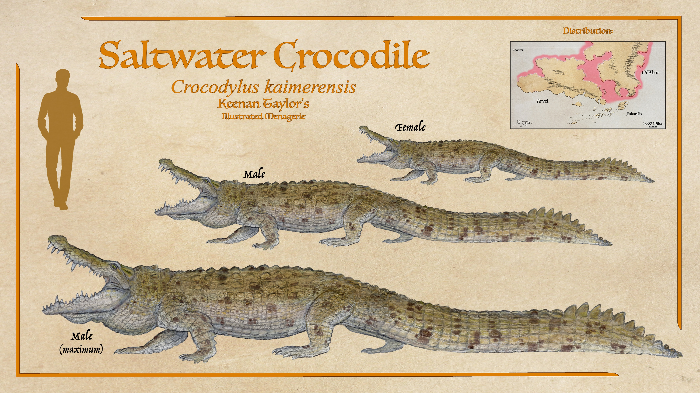
Crocodylus kaimerensis kaimerensis
The common crocodile or Kaimere is the Kaimeran saltwater crocodile. Though often lumped into the same species as their Earth counterpart, over a million years of divergence and adaptation to this new context, some Assembly naturalists advocate for its own species designation. They have a tremendous range, spanning throughout the inland sea, the Crescent Sea, up the Ni'Khari coast of both west and east, and around northern Arvel. Salties have also been reported along Kairul's west coast. These crocodiles are highly aggressive. They will often seek out confrontation, especially if the opponent is smaller. As the largest bulls can reach eight meters, this includes many residents of the inland sea and adjourning estuaries. Saltwater crocodiles are a common sight on beaches near settled areas, and this proximity coupled with their aggression makes them among the most frequent predators of kaimerans. Efforts to cull them have fallen on deaf ecological ears, as this merely opens up space for other salties to lay eggs and fill in the vacancies, and they are dangerous enough that culling inevitably comes with loss of kaimeran life. Also, they are very resilient animals, and crocodiles injured in traps or failed assaults often become strict man-eaters as they are no longer fit to capture wild prey. This danger does come with respect, and many clans and noble houses will take the saltwater crocodile as their sigil to evoke its patience and ferocity.
Read species article →Western Saltwater Crocodile

Crocodylus kaimerensis arvelensis
The Bay of Timugai is shallow, quite like the inland sea of the known world, but it has much more loose sediment than seagrass, with some theorizing this is because of offshore winds blowing sand out from the deserts. There's lots of fish and other small prey, but without seagrass, there aren't nearly as many bulky grazers or benthic feeders and as a consequence not nearly as many large predators. It's not all loose sediment: some stretches of coast have a mangrove swamp for dozens of miles before land, and there are lots of mangrove swamps within the bay itself, but it's quite different from what is seen in the inland sea. The salties in these waters are noted for being larger and lighter in color than those in the known world. Some consider them a distinct species, but the periodic darker saltie from the inland sea has been seen and integrates just fine, so it more likely represents a subspecies insular to this relatively isolated bay, as leaving these waters is quite deep on all sides. These western saltwater crocodiles might not reach the size of the enormous predators of the inland sea, but with the largest measured male reaching thirty-two feet, or nearly ten meters, and average specimens seven to eight meters, they are quite formidable.
Read species article →Seridic Crocodile
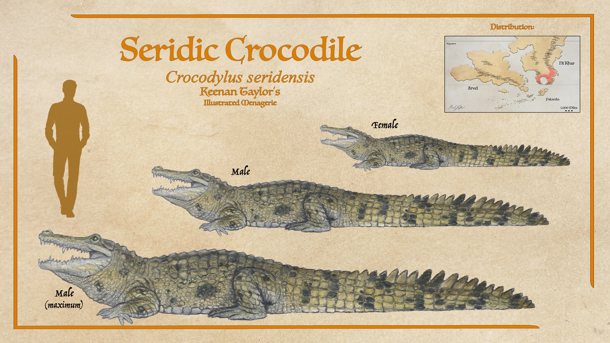
Crocodylus seridensis
The Seridic crocodile shares a common ancestor with salties, but are commonly regarded as distinct. They are the second largest of kaimeran crocodiles, with males reaching seven meters at their biggest, though they still average a bit smaller than salties. Seridic crocodiles are notoriously aggressive, even moreso than their marine cousins, and responsible for more kaimeran deaths than any animal in the wetlands after snakes and mosquitoes, though it must be said that mosquito-born diseases are far less deadly than they are to humans thanks to the protection of their constitution magic. Seridic crocs are distinguished from salties by a much greener hide, but are otherwise quite similar, especially in their western range where they more frequently mate with saltwater crocodiles.
Read species article →Western Crocodile

Crocodylus occidensis
The western crocodile is a part-time visitor of the rivers running near upland hollers in Central and Eastern Arvel. Males can approach six meters in their largest specimens. Not large enough to threaten an adult zentaur, but more than enough to pose a threat to juveniles and making them the second largest predator in this region. Because smaller crocs have low cold tolerance and must nest in warmer regions, most of the crocs in this area are large males exploring feeding opportunities in less competitive waters than the lowland marshes home to giant caiman, or the estuaries where saltwater crocodiles and giant gharial dominate.
Read species article →Sheklat Dwarf Crocodile
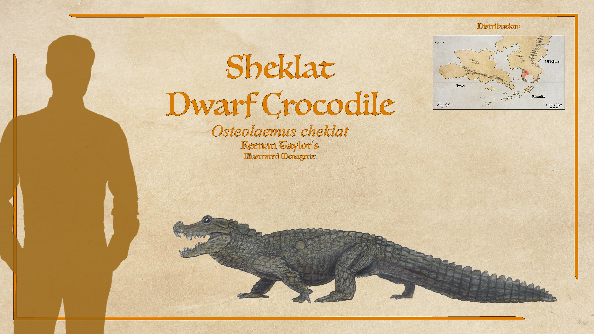
Osteolaemus cheklat
Another crocodile not from the Asian Pleistocene harvest is the Sheklat Dwarf Crocodile. These osteolaemine crocs are the only living member of this clade in the known world, being descended from African crocodiles that were common prior to the takeover of caiman at the advent of the Anchored Period. They are just over a meter long, making them the smallest eusuchian in the known world. In contrast to their larger kin, they are quite timid. Though their range is limited and they avoid people, the peoples of the western Crescent report them to be common, and these little river dragons are generally regarded as a harmless sign of good luck and prolific waterways, garnering a much more positive relationship than kaimerans tend to have with species of Crocodylus.
Read species article →Bear Crocodile
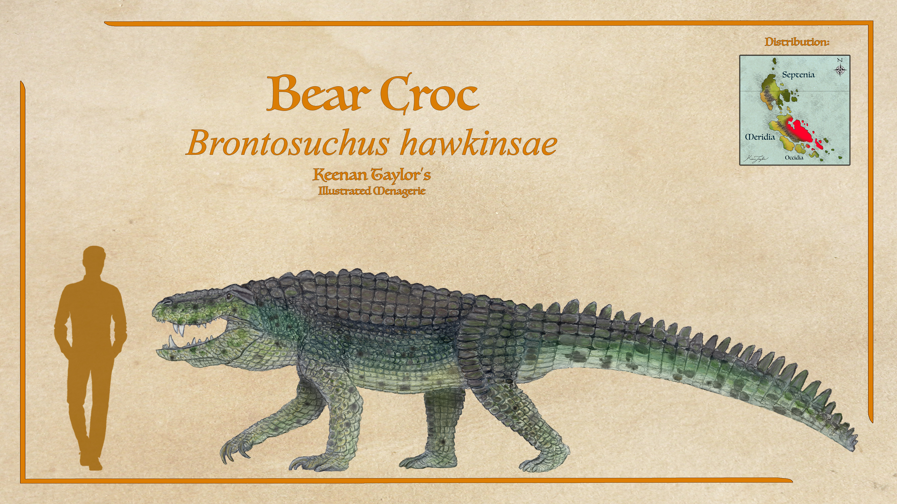
Bronotsuchus hawkinsae
Eastern Meridia is also called the Crocodile Jungle, for this tropical region has seen crocodylomorphs explode in biodiversity. The region's top predator, called the thunder crocodile or eastern bear crocodile by Assembly naturalists, is a massive terrestrial crocodylomorph which, thanks to a powerful tail, is capable of island hopping and swimming along coasts, enabling it to inhabit many of the tropical islands too. It is endothermic, capable of impressive endurance, though it is principally an ambush predator. Adults consume roughly 5 — 9 kilograms of meat daily on average, although a successful hunt may provide over 45 kilograms of flesh, allowing them to fast for days afterward. They are most common and successful in Meridia's lush eastern jungles, and do not have a natural predator of their own. Its skull is short, deep, and massively reinforced compared with river crocodiles. Their teeth, combined with extraordinary jaw musculature, allow the animal to tear apart heavily armored herbivores and even split large tree trunks while excavating burrows or accessing arboreal prey. Their bite is legendary, especially in conjunction with eight-inch claws, and they are recorded to pull apart armored herbivores and the door of a bunker.
Read species article →Western Odajere
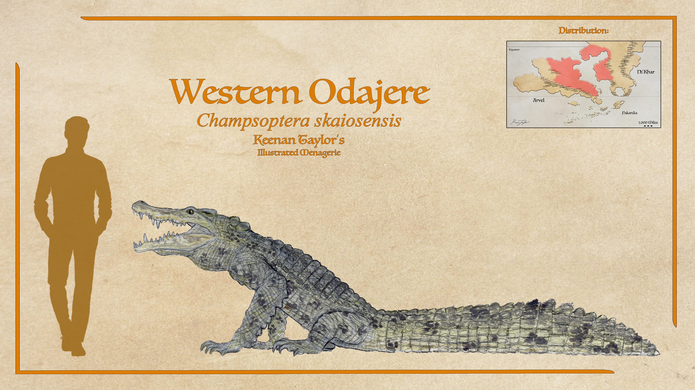
Chamspotera skaiosensis
Although most crocodiles in the known world belong to the Crocodylus genus, their clade does have ancestry traced back to the harvests establishing the Tyrant Dynasty. This lineage in Ni'Khar was exterminated during the Dynastic Extinction, but they persisted in Kairul. One clade in eastern Kairul evolved long forelimbs that aid them in navigating debris in wetlands. One of these so-called 'winged crocodiles' is the western odajere. There is a species in the Seridic wetlands and northern Ni'Khar, but they are most abundant in the Arvelith northern wetlands. They are fairly small, the second smallest crocodyloid in the known world at around four meters. For reasons unknown, they demonstrate the lowest sexual dimorphism of any eusuchian, with males rarely being more than ten percent larger on average and having substantial overlap in size. When swimming in cluttered or shallow water, they often 'walk' with their long arms and push aside debris. While in open water, their arms sometimes tuck in to be more hydrodynamic, but they sometimes spread their arms for greater stability and even occasionally stroke to add thrust when closing in on prey.
Read species article →Winged Crocodile
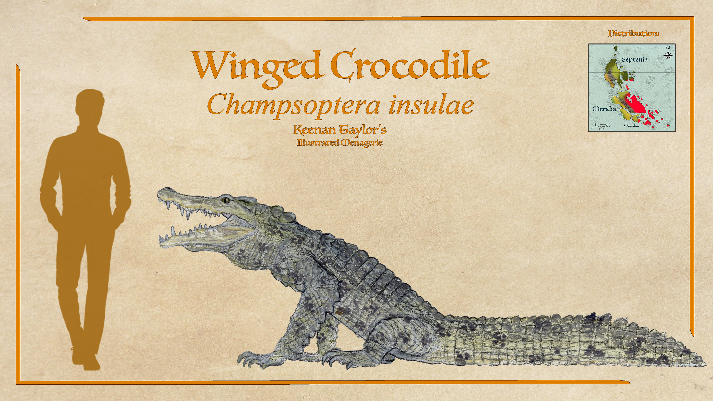
Chamspotera insulae
Many tropical islands to the east are far enough from the mainland that the bear croc can't reach them. These places are home to another crocodylomorph predator: the winged crocodiles. Despite the name they cannot truly fly, though their disproportionally long arms do help propel them in a flying stroke. Mostly these long forelimbs help them navigate the mangroves and marshes which make up a majority of these islands, allowing them greater mobility and reach than most of their kin. A species of winged crocodile is also found in the known world, though it seems the family first evolved in the coastal wetlands of Kairul and radiated out after the Dynastic Extinction.
Read species article →Seridic Fisher Crocodile
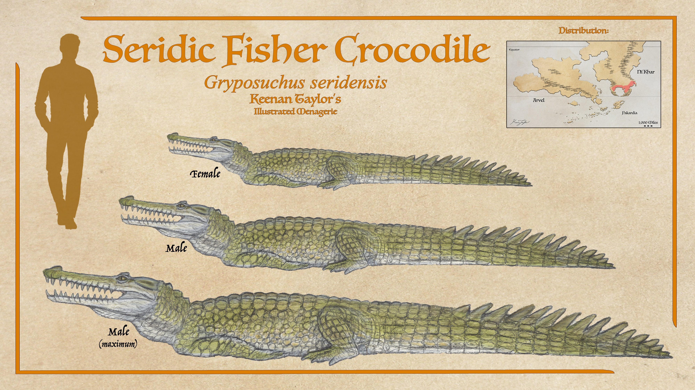
Gryposuchus seridensis
The Seridic fisher croc is the most abundant crocodilian in its environment. At four to five meters, they are much smaller than the Trakaiam fisher croc, and like others of the genus Gryposuchus throughout the known world, they are restricted to freshwater as they possess no way to filter salt from their blood.
Read species article →Trakaiam Fisher Crocodile
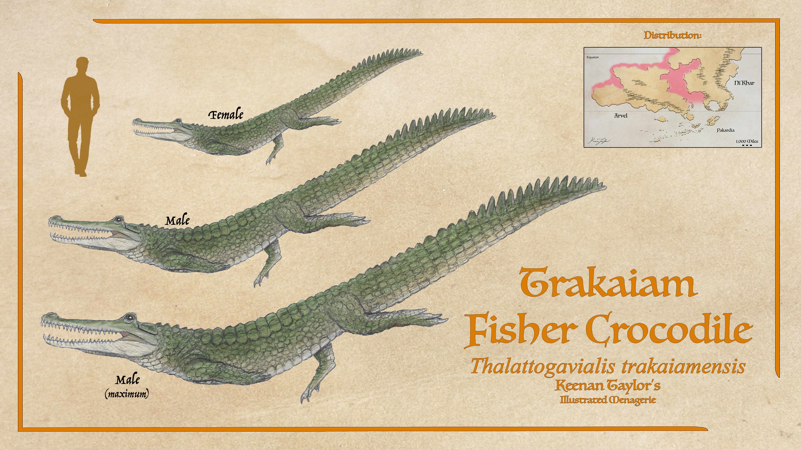
Thalattogavialis trakaiamensis
Gryposuchids are a clade of gharials well known throughout the second half of the Cenozoic, and have several living species in Kaimere. Best known is the Trakaiam fisher croc. This marine, coastal, and estuarine gharial approaches the saltwater crocodile in size, though are far less aggressive and target much smaller prey. A seven meter bull may not seek out people as prey, but children do fall under their designation as small game. A few children have been claimed by particularly massive bulls, but this is very much a rare occurrence. They are much larger than competing small fish specialists, and need less food due to their slow metabolism, so lead easy lives. Their size also affords them advantage in securing shore space, and fisher crocs can often be found in their hundreds or even thousands on islands along productive channels.
Read species article →Kairulan Fisher Crocodile
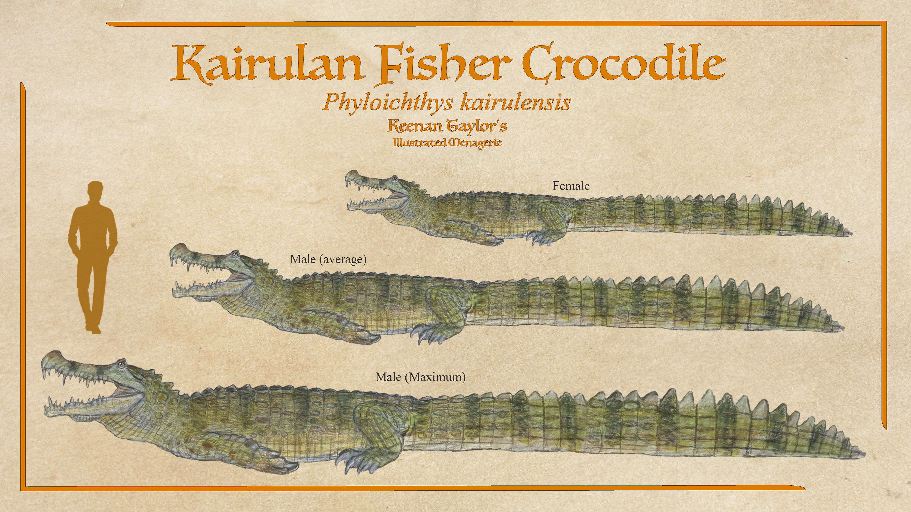
Philoichthys kairulensis
By far the most common crocodilian of Kairul is a Gavialid Philoichthys, or the Kairulan fisher crocodile. These croc is probably close to a ton. Though fish specialists, they will take just about anything they can catch, making for an extremely versatile animal. The species in the known world generally has a brown-green hide and slightly narrower skull, so are considered different species, but they can freely interbreed so some argue P. kairulensis should be a subspecies of the known world species. They are a favored prey of Ziphonodon, and the source behind the crocodile cannibals name in many Kairulan languages, such as tikakatik.
Read species article →Zhen
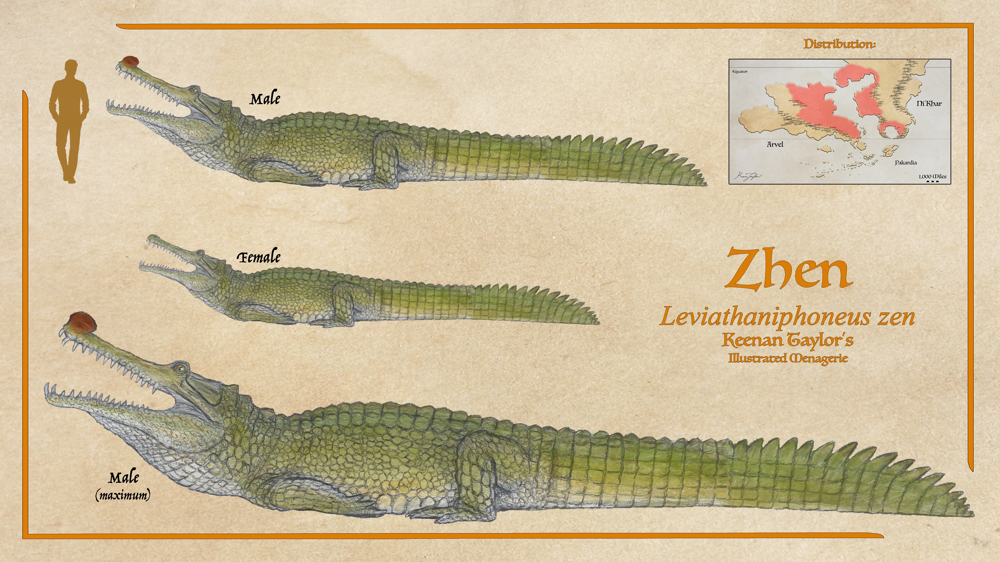
Leviathaniphoneus zen
Today, the largest pseudosuchian known to the Assembly is the zhen. Their origins aren't conclusively known. While most think it a descendant of Hesperogavialis, some argue for a Gryposuchus or even Asian origin, considering similar cranial material in a specimen dated 9 mya (though this may be due to convergence). This enormous gharial remains a fish specialist, but given the tremendous diversity and size of freshwater fish in the wetlands of the known world, this lifestyle has paid off in spades, and the largest bulls can reach a staggering fifteen meters and fifteen to eighteen tons, though it must be said most bulls are closer to ten to twelve meters and six to eight tons, and those tremendous specimens only occur in especially productive habitats with the space and game to support these river kings.
Read species article →Qajarith Alligator
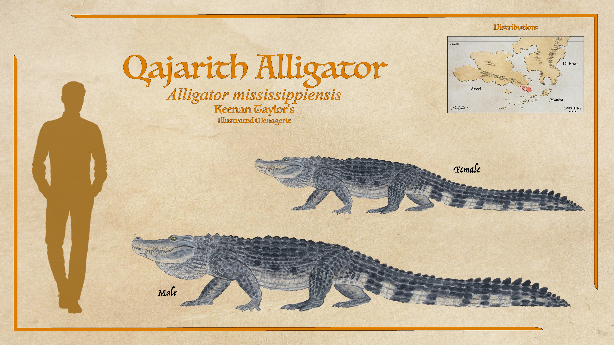
Alligator mississippiensis qajarensis
Alligators were the first crocodilians introduced to Kaimere after the Dynastic Extinction. While they have lost much of their northern range to later harvests bringing caiman and crocodile, their generally greater tolerance of cold has benefitted them greatly. There are three alligator species in the known world and its nearby regions. Best known is the Qajarith alligator, which is the same species we have in North America today: Alligator mississippiensis. After only ten thousand years in Kaimere, is has not speciated and are indistinguishable from modern American gators. This was brought to Kaimere during the infamous Interrupted Harvest, and was one of the few megafauna to endure the later persecution of the First Children and recover to a stable population after their disappearance.
Read species article →Kaimeran Alligator
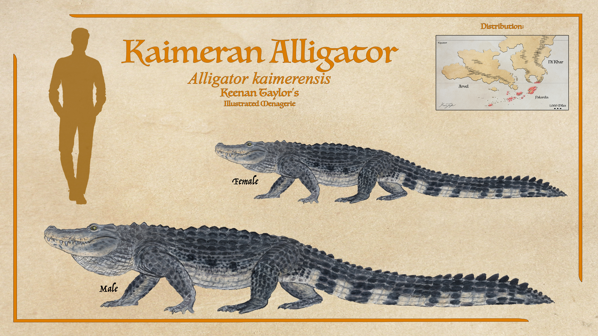
Alligator kaimerensis
The Free States, Pakardia, and many of the Southern Islands are home to the second alligator species. While they are recognized as distinct subspecies, generally all are considered the same: the Kaimeran alligator. The gators brought from the interrupted harvest likely integrated in some capacity, but generally they avoid salt water, so interchange is not common. They spread, likely from a now-extinct Qajarith ancestor, around 1.5 million years ago when sea levels were low. Generally these alligators are quite similar to American alligators. The island populations tend to be a lot smaller, though this seems less predetermined and more a matter of those in Pakardia and the Free-States having more space and prey to enable larger growth.
Read species article →Arvelith Alligator
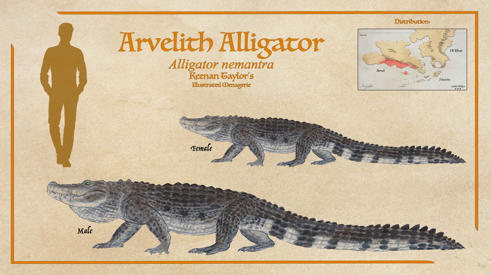
Alligator nemantra
The waterways along southern Arvel are home to a third alligator species: the Arvelith alligator. Not much is known about them in comparison to the other two gator species in Kaimere. They tend to be a lighter brown rather than the black of Qajarith and Pakardiant gators, but their skeletal anatomy is nearly indistinguishable. Despite this, hybrids are unknown between them and the other two species, suggesting a more ancient ancestry, perhaps going back to the first harvest after the Dynastic Extinction, whereas the Pakardiant species was harvested from the ancestor of modern gators 8 million years ago. They are also generally wary of people, and the locals describe them as game and even companions, a striking contrast to the cultural perception of crocodilians in the warmer half of the known world.
Read species article →Seridic Cattle Caiman
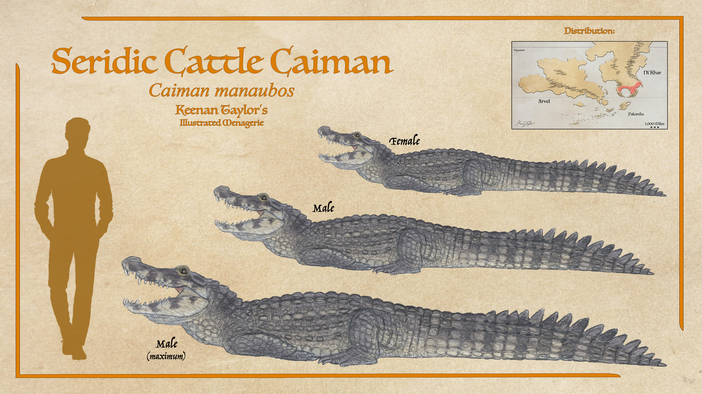
Caiman manaubos
Most caiman species in the known world are fairly small, between 2 and 4 meters. The Seridic cattle caiman is one of these smaller species, with average specimens in this range. They are given this name because they are well regarded for their meat. Seridic crocodiles have better hide for armor and clothing, as it is not as strong and brittle as caiman hide, but cattle caiman are fairly docile, social enough to cohabitate while penned, readily breed in captivity, and are not particularly dangerous as long as their handlers are careful. They don't need much food or space to be healthy. Much less than endothermic domesticates of similar size. The only thing preventing proper domestication is how long it takes to reach adulthood, so catching wild caiman are often preferred to the time and effort of raising them. Once caught, if there are sufficient gaps in the fencing to the outside waterways, they can often get by on any fish that swim into their enclosure. It is common for Seridic villages to have at least a small population of cattle caiman for food and eggs.
Read species article →Arvelith Upland Caiman
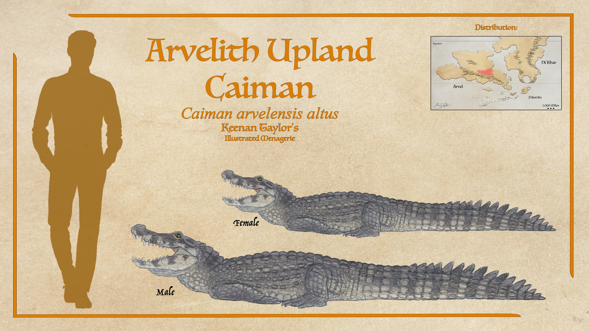
Caiman arvelensis atlus
The Arvelith upland caiman is one of many animals in the Caiman genus, one of Kaimere's most abundant and speciose crocodilian genera. Like alligators, they have a greater cold tolerance than most crocodilians, enabling them to remain in the valleys and hollers year-round, whereas crocodiles are rarely residents. Caiman hunt small fish and birds for the most part, but happily partake in scavenging larger meals.
Read species article →Kaimeran Black Caiman
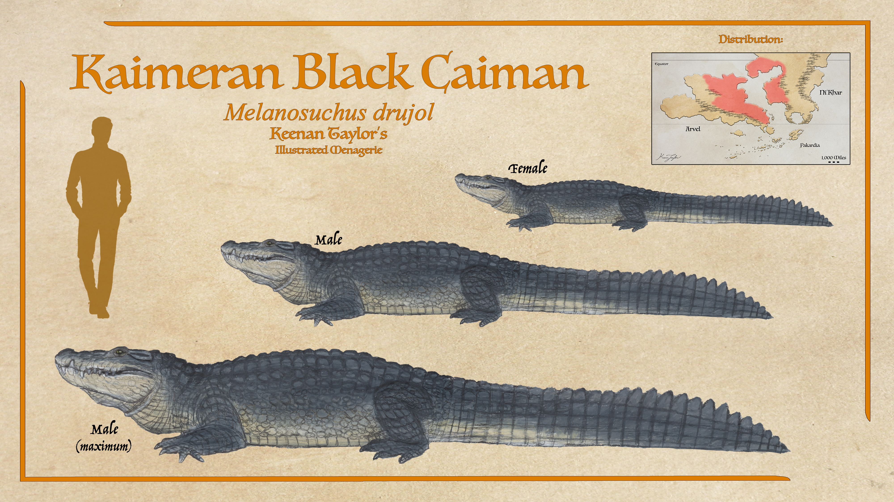
Melanosuchus drujol
The common or Kaimeran black caiman of Arvel has the widest range. While there are certainly caiman species with higher populations, the size of black caiman means they can more easily migrate, and therefore they have an extremely wide range. They and black caiman of Earth share a common ancestor. They can reach seven meters in large bulls and weigh nearly two tons, though females and average males are substantially smaller. Compared to crocodiles and alligators, their head large and sturdy, aiding in the capture of large prey. Their hide is notoriously hard to penetrate, and rifles have glanced off large males. Common caiman are sometimes split between a Ni'Khari and Arvelith wetland populations, though there's enough interchange that usually they are lumped together. They had an Arvelith origin back during the Anchored Period, but it was during the low sea levels in its aftermath that they spread north. There are no longer resident caiman in the inland sea, though bull common caiman will sometimes venture out and hunt in crocodile territory, though they are quite cautious in this domain.
Read species article →Nausepzhen
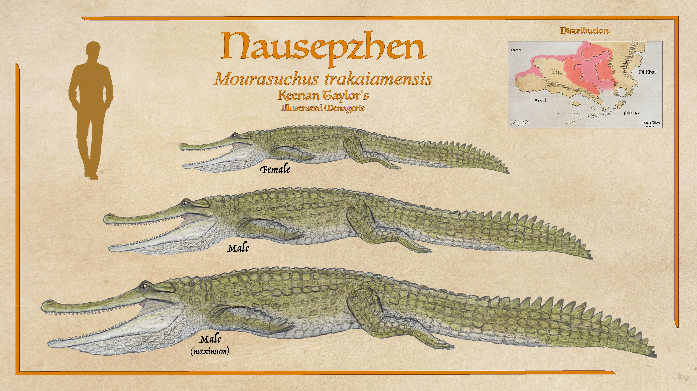
Mourasuchus trakaiamensis
Another large caiman is the broad-snouted nausepzhen. These are common in northern Arvel, though can be found throughout freshwater habitats and bulls will often venture into the seagrass meadows. They are benthic feeders, using their broad snouts and ample narrow teeth to gather sediment and filter out crustaceans, small fish, and mollusks. Some species are only a few meters long, while the western species can exceed the length of the largest salties, though it must be said that like Trakaiam fisher crocs, these lengths are improved by oversized heads, and the biggest salties are still a lot heavier.
Read species article →Hrugetaur
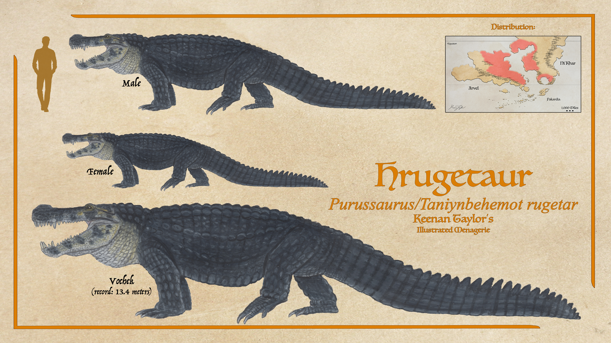
Purussaurus/Taniynbehemot rugetar
Purussaurus was another giant crocodilian introduced after the Seridic Wetlands were purged by algal blooms, descended from this species is the hrugetaur. In southern Ni'Khar, these giant caiman are actually quite uncommon in the Crescent Peninsula and Seridic Wetlands today. The story is much different to the west. Though southern Arvel and western Ni'Khar have their populations, it is the wetlands throughout the titan gardens in northern Arvel which see the hrugetaur as among the most common large crocodilians.
Read species article →Han Zhu
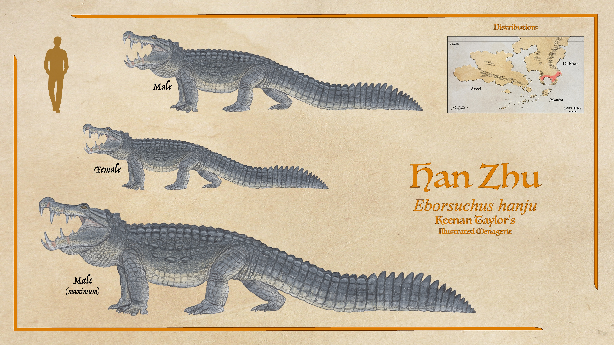
Eborsuchus hanju
Once Eborsuchus arrived in the Seridic Wetlands within the past million years or so, the abundant large fish, crocodilians, dinosaurs, and mammals offered plenty of opportunity. It is unknown if they had a hand in the relative rarity of the giant caiman in this habitat, but they do compete for the same prey. Eborsuchus construct simpler nests than Purussaurus, and that may well have been a deciding factor during the arid period 1.5 mya, which brought in large crocodiles from Earth and Eborsuchus from Kairul to the wetlands, both competing for the prey the giant caiman enjoyed more exclusive access to back during the Anchored Period and could account for their rarity. The fact that Eborsuchus has not spread west could support this, as the giant caiman had recovered by the time they looped around the western peninsula of the Crescent, showing the giant caiman may be dominant in stable conditions but were set upon at a low point at the end of the Anchored Period. Both species also compete with kurajaku, which also use fangs to subdue armored prey, though the attack of the theropod is paired with enormous claws. In this environment they have become a distinct species: the han zhu.
Read species article →Odaga
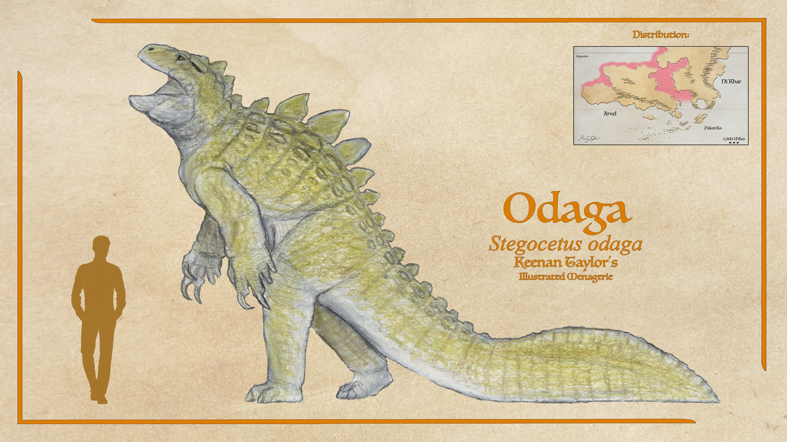
Stegocetus odaga
Two clades of herbivorous protosuchian have representatives in the known world. Most famous is a recent migrant from the Permian Islands: the odaga, or sloth crocodile. These bipedal herbivores have drawn comparison to the fictional kaiju Godzilla, also a bipedal semiaquatic giant reptile, though with the largest males reaching four meters tall, the odaga is dramatically smaller. The osteoderms on their back are primarily a display feature. Though it has been proposed they may serve a thermoregulatory function, and that may be the case to a small degree, though the thick layer of keratin over the bony core prevents easy shedding or buildup of heat if the blood vessels were only protected by a thin layer of skin.
Read species article →Sloth Crocodile
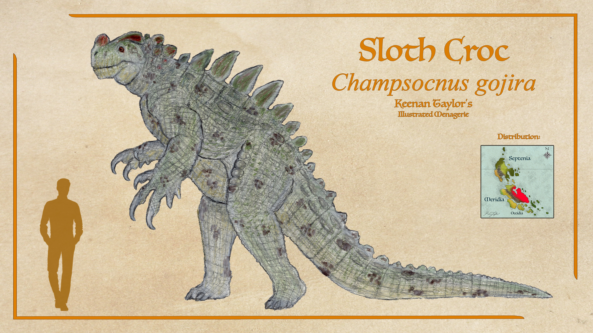
Champsocnus gojira
Many archosaurs call the jungles of the Permian Islands home. Largest of the Meridian herbivores is the sloth croc. They belong to the same family as the odaga of the known world. Their cladistics is poorly understood, but most believe they are some sort of crocodylomorph. They have a strong beak over peg-like teeth, and massive arms that they use both in pulling food into reach and also to defend themselves from bear crocs. Despite a ferocious appearance, they are fairly docile. They are also quite intelligent, with fairly complex social groups and vocal communication. Herds of these beasts help keep the rainforests open, tilled, and disperse seeds far and wide throughout their range, making them keystone species in this verdant ecosystem.
Read species article →Iogrotu
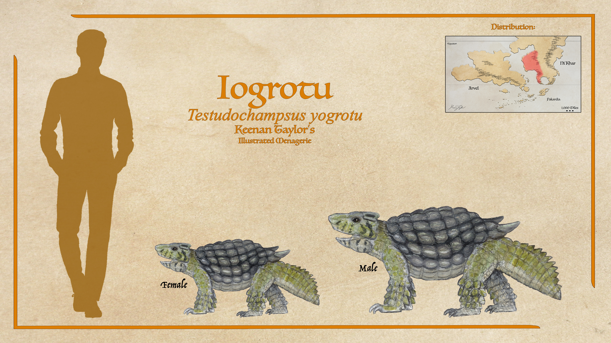
Testudochampsus yogrotu
At one meter long, the burrowing iogrotu is the largest representative of the terrestrial testudochampsids, and is found throughout the western mountains of the Crescent. Smaller species and related genera are found throughout the northern half of the known world. They are solitary, though will tolerate other burrows near their own. Unsurprisingly, they are low browsers and take almost any form of vegetation they can get, though they struggle to digest grass and therefore favor forests with ample fern and horsetail thickets. Their burrows are believed to have helped them survive the Dynastic Extinction, as small testudochampsids are some of the few native fossils found in the immediate aftermath.
Read species article →Wug
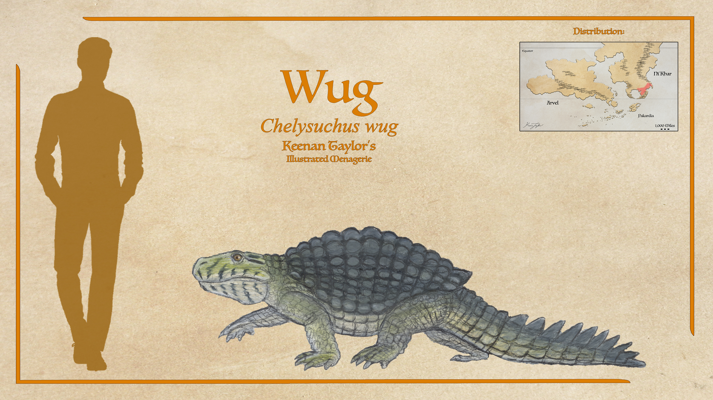
Chelysuchus wug
The second member of this clade are the chelysuchids. The wug is around the same size as iogrotu, though are longer thanks to a tail convergently similar to many modern crocs. They also live in burrows, though spend most of their time in the water foraging for wetland vegetation. They are ectothermic, so don't need nearly as much food as a mammal or dinosaur herbivore of the same size, but a slow pace means it can take them a while between food. Unlike the iogrotu, they will also take carrion if the opportunity presents itself.
Read species article →Ao Lot Qetz
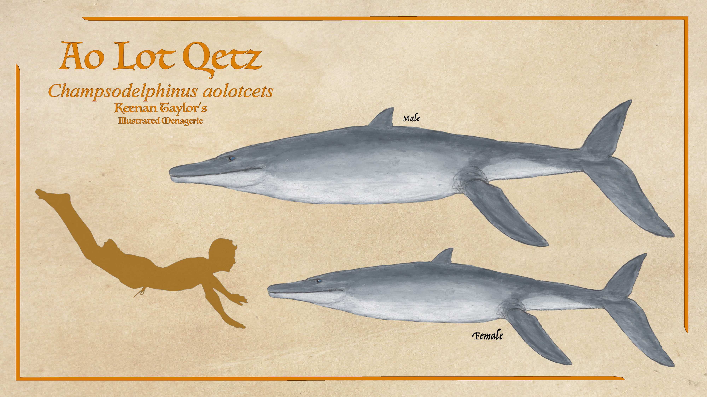
Chempsodelphinus aolotcets
The ao lot qetz is an abundant species of thalattosuchian in the interior ocean between Kairul's two peninsulae. This mostly tropical ocean has only one opening to the southern oceans in the temperate and subpolar zone. Because of this, the region has a great deal of endemism on the clade down to species level. Mosasaurs are present, but thalattosuchians recovered from their extinction prior to this arrival, and remain in many niches to this day. As they lack blubber or other insulation, they are restricted to warm waters and are not found outside of this region.
Read species article →Ammut
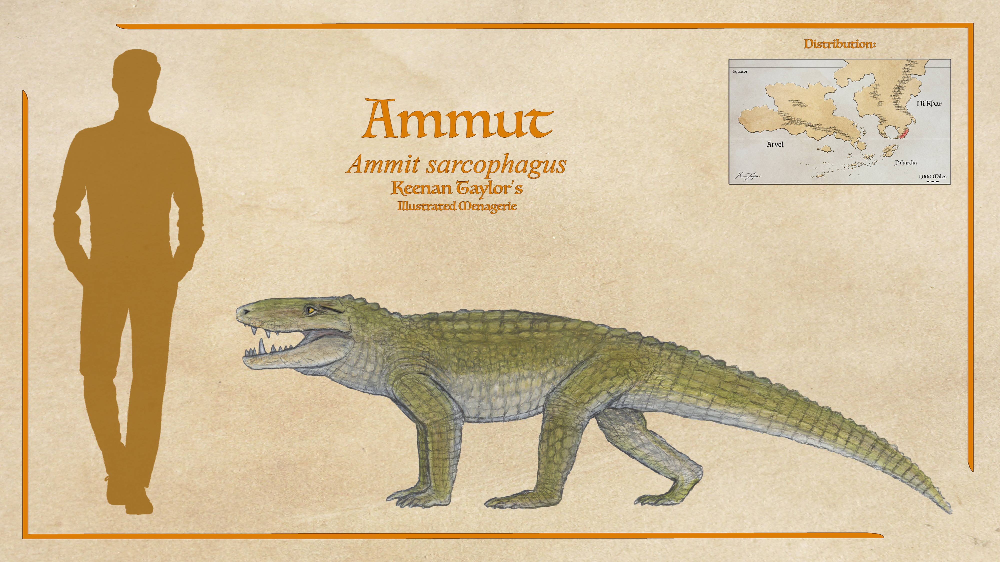
Ammit sarcophagus
Sebecids win Kaimere enjoyed a brief era of success as top predators in the aftermath of the Dynastic Extinction, but today, they were long assumed to be extinct in the Known World. However, in 2014, a species of terrestrial crocodile belonging to this clade was confirmed by the Assembly naturalists and named ammut after the entity in the ancient Egyptian religion. Although fossil sebecids are presumed to be ectothermic, the ammut is surprisingly active. It is assumed their metabolism is at least mesothermic, though it could simply be that they have highly efficient respiration and endurance, and living in a warm rainforest enables such activity. The inland range can get cool during the winter, and they remain active, lending credence to the theory that they are more endothermic than crocodilians of Earth. This has happened in Earth's history, in the boar crocodile of the Permian Islands, and indeed endothermy was the ancestral condition of pseudosuchians, so it is not without precedent. This environment in which they live, with dense foliage, moss covering every surface, and rapid streams carving a complex maze through stone, demands flexibility and athleticism. Ammut are not only fast and surefooted, they are surprisingly proficient if not particularly swift climbers. They have been spotted in trees and scaling tall cliffs. Many individuals were noted to have several healed injuries attributed to falls. This tells a story of an animal that may not be specialized for living in trees or scaling cliffs and caves, but a croc's got to eat, and they have the fortitude to walk it off.
Read species article →04 · CLASSIFICATION
Taxonomic Notes
This section records uncertainties, disputed relationships, and proposed revisions to the family's classification. Confirmed taxa should be distinguished from tentative identifications and provisional placements.
Where an animal's appearance suggests membership in Felidae but its ancestry has not been established, resemblance alone should not be treated as sufficient evidence of taxonomic inclusion.